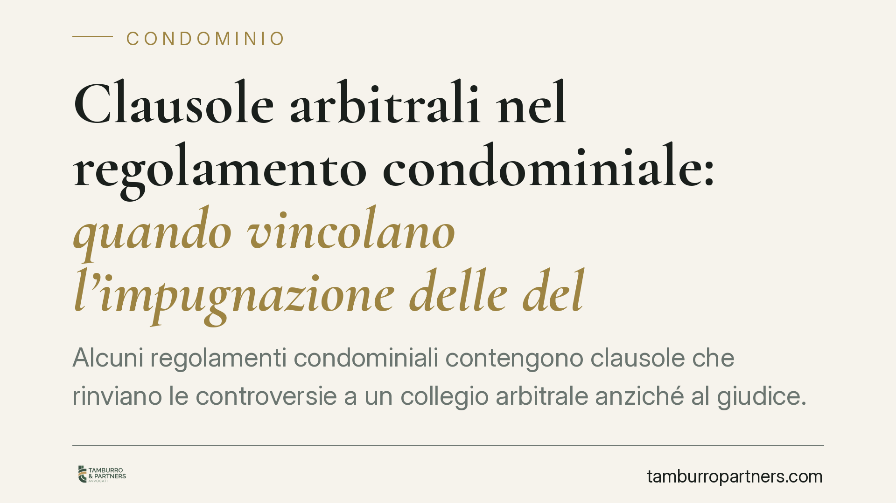

Clausole arbitrali nel regolamento condominiale: quando vincolano l'impugnazione delle delibere
Alcuni regolamenti condominiali contengono clausole che rinviano le controversie a un collegio arbitrale anziché al giudice. La questione è se tali clausole possano incidere sull'impugnazione delle delibere assembleari e in quali limiti vincolino i condomini, compresi i successivi acquirenti. Il tema è più sfumato di quanto appaia e merita cautela, perché un errore sulla sede della controversia può costare la decadenza dall'impugnazione.

Il tema
Non è raro che il regolamento di condominio contenga una cosiddetta clausola compromissoria: una previsione che devolve le controversie tra condomini, o tra condomini e condominio, a un collegio arbitrale invece che al tribunale.
La domanda ricorrente è se tale clausola possa riguardare anche l'impugnazione delle delibere assembleari e se vincoli chi non l'ha espressamente sottoscritta, come l'acquirente di un'unità immobiliare entrato nel condominio in un momento successivo.
La risposta non è univoca. L'orientamento giurisprudenziale sul punto è articolato e richiede alcune distinzioni preliminari, prima di trarre conclusioni operative.
Inquadramento normativo
L'impugnazione delle delibere assembleari è disciplinata dall'art. 1137 cod. civ.: contro le deliberazioni contrarie alla legge o al regolamento ogni condomino assente, dissenziente o astenuto può ricorrere all'autorità giudiziaria. Il termine è di trenta giorni, che decorrono dalla data della deliberazione per i presenti dissenzienti o astenuti e dalla data di comunicazione del verbale per gli assenti. È un termine di decadenza: scaduto, l'impugnazione non è più ammissibile.
L'arbitrato trova invece fondamento negli artt. 806 e seguenti cod. proc. civ., che ne delineano la disciplina e i limiti di compromettibilità delle controversie.
Sul rapporto tra clausola compromissoria e deliberazioni condominiali occorre tenere presenti alcuni punti consolidati dalla giurisprudenza, tra cui gli orientamenti delle Sezioni Unite della Corte di Cassazione (si veda, in materia di natura dell'arbitrato condominiale e di efficacia delle clausole regolamentari, Cass. SU n. 24906/2011 e la giurisprudenza successiva):
- la clausola compromissoria ha natura contrattuale e, per vincolare, presuppone l'adesione del singolo condomino, non potendosi presumere senza un fondamento negoziale adeguato;
- l'arbitrato condominiale è tradizionalmente ricostruito come facoltativo e, di regola, di tipo irrituale, salvo diversa e inequivoca previsione; non è quindi corretto presentarlo come automaticamente obbligatorio ed efficace erga omnes.
In breve: una clausola arbitrale può incidere sulla sede della controversia, ma la sua effettiva vincolatività dipende dal tenore della clausola e dall'adesione dei condomini. Si tratta di una materia tuttora oggetto di dibattito, non di un principio pacifico.
Implicazioni pratiche
Per il condomino che intende impugnare una delibera, la presenza di una clausola compromissoria nel regolamento solleva un problema concreto: individuare la sede corretta della controversia.
È utile chiarire un equivoco frequente. Quando la clausola è efficace e di natura rituale, l'effetto processuale non è la "improponibilità" della domanda davanti al giudice, bensì la possibilità per la controparte di sollevare l'eccezione di compromesso, ossia di eccepire che la controversia spetta agli arbitri (artt. 806 e 817 cod. proc. civ.). Il giudice ordinario, in presenza di una valida convenzione arbitrale, non può decidere il merito.
Il rischio più insidioso riguarda i tempi. Chi avvia l'iniziativa nella sede sbagliata rischia di vedersela respingere per ragioni procedurali e, nel frattempo, di far scadere il termine di trenta giorni previsto dall'art. 1137 cod. civ. La decadenza, una volta maturata, non è recuperabile. È quindi essenziale verificare per tempo dove e come proporre l'impugnazione.
Per l'acquirente di un'unità immobiliare, inoltre, l'efficacia della clausola nei suoi confronti va valutata caso per caso, in relazione al contenuto del regolamento e alle modalità con cui ha aderito agli obblighi regolamentari.
Cosa fare in concreto
- Leggere il regolamento e individuare se esiste una clausola compromissoria, verificandone il tenore letterale: a quali controversie si riferisce e se menziona espressamente le delibere.
- Qualificare la clausola, distinguendo se prevede un arbitrato rituale o irrituale e se risulta un'adesione idonea a vincolare il singolo condomino.
- Calcolare il termine di decadenza di trenta giorni, distinguendo la decorrenza per i presenti da quella per gli assenti (comunicazione del verbale).
- Verificare la sede competente prima di depositare l'atto, per evitare che l'avvio nella sede errata comprometta il rispetto del termine.
- Conservare la documentazione rilevante: verbale, convocazione, prova della comunicazione e copia del regolamento vigente.
Disclaimer
Contributo informativo a cura di Tamburro & Partners Avvocati. Non costituisce parere legale.
Ogni condominio ha una storia a sé.
Se gestisci un'amministrazione e vuoi un confronto su una specifica questione condominiale, scrivi allo studio. Ti rispondiamo entro un giorno lavorativo.